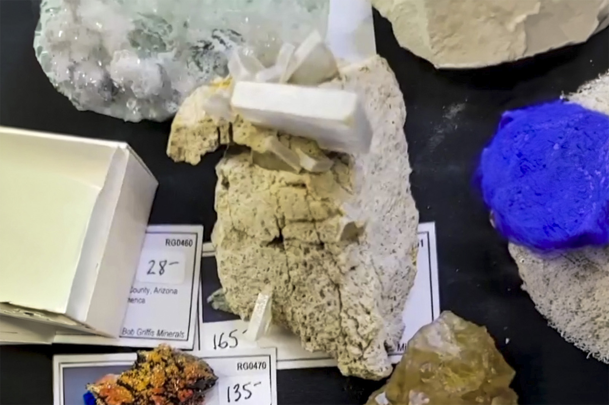

Barite
"Blocky White Barite Crystals on Matrix"
VI-10482
Muddy Creek, tributary of Crater Creek, Rio Grande County, Colorado, USA
ex Bob Griffis collection
Purchased 6/2/2026 from Virgo Gems for $95.82
Core Collection • In Collection
Details
Storage Type: Flat
Storage Location: 000 Unassigned
Size class: TBD (37)
Dimensions: Unrecorded
Estimated Mass: 57.1 g
Luster: Average, Earthy